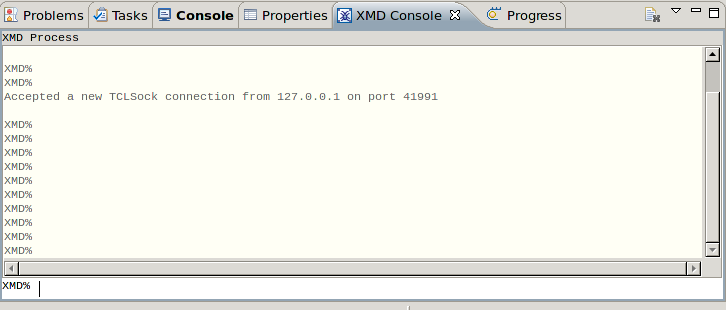

Debugging applications
You can issue XMD commands or see the debug messages in the XMD console view. The XMD console view automatically opens when you switch to the Debug perspective.


Debugging a program
Running a program
Copyright © 1995-2013 Xilinx, Inc. All rights reserved.